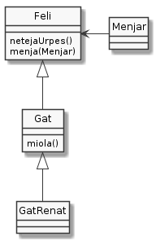

Exercici 34_33. Els mètodes que realment es criden
Exercici 34_33. Els mètodes que realment es criden
Context
Carpeta de lliurament:
34_33_metodes_cridats/Continguts relacionats: Comportaments específics
Com lliurar-lo: instruccions
[✓] Exercici amb autoavaluació
Enunciat
En aquest exercici analitzaràs quins són els mètodes que es criden realment quan hi ha pel mig l'herència.

Per fer-ho, considera la definició de les següents classes:
1class Feli {
2 public Feli() {
3 System.out.println("Neix Felí");
4 }
5 public void netejaUrpes() {
6 System.out.println("Felí neteja urpes des de " + this.getClass());
7 }
8 public void menja(Menjar menjar) {
9 System.out.println("Felí menja " + menjar + " des de " + this.getClass());
10 }
11}
12
13class Gat extends Feli {
14 public Gat() {
15 System.out.println("Neix Gat");
16 }
17 public void miola() {
18 System.out.println("Gat miola des de " + this.getClass());
19 }
20 @Override
21 public void menja(Menjar menjar) {
22 System.out.println("Gat menja " + menjar + " des de " + this.getClass());
23 super.menja(menjar);
24 }
25}
26
27class GatRenat extends Gat {
28 public GatRenat() {
29 System.out.println("Neix Renat");
30 }
31 @Override
32 public void miola() {
33 System.out.println("Renat miola des de " + this.getClass());
34 }
35
36 @Override
37 public void menja(Menjar menjar) {
38 System.out.println("Renat menja " + menjar + " des de " + this.getClass());
39 netejaUrpes();
40 super.menja(menjar);
41 }
42}
43
44class Menjar {
45 private static final String MENJAR_PER_DEFECTE = "sardines";
46 private final String nom;
47 public Menjar(String nom) {
48 if (nom != null && !nom.isEmpty()) {
49 this.nom = nom;
50 } else {
51 this.nom = MENJAR_PER_DEFECTE;
52 }
53 System.out.println("Neix Menjar(\"" + this.nom + "\")");
54 }
55 public String toString() { return nom; }
56}
Important
Aquest exercici el pots fer a base de prova-i-error i pots amagar-t'ho com un secret que ningú no ha de saber mai. Amb tot, et recomano que, si li vols treure el màxim a aquest exercici, abans d'executar una sola vegada la prova, intentis codificar totes les instruccions deduint la sortida. Quan comencis a executar la prova, si no has encertat a la primera, intenta descobrir perquè i refer el teu codi de manera que abans de provar-ho de nou pensis que està corregit.
Què haig de fer?
Crea una classe anomenada DemoCrides que, disposi d'un main() que
en ser executat generi exactament el següent per sortida estàndard:
$ java DemoCrides
Neix Felí
Neix Felí
Neix Gat
Neix Felí
Neix Gat
Neix Renat
Felí neteja urpes des de class Feli
Felí neteja urpes des de class Gat
Felí neteja urpes des de class GatRenat
Gat miola des de class Gat
Renat miola des de class GatRenat
Neix Menjar("bacallà")
Renat menja bacallà des de class GatRenat
Felí neteja urpes des de class GatRenat
Gat menja bacallà des de class GatRenat
Felí menja bacallà des de class GatRenat